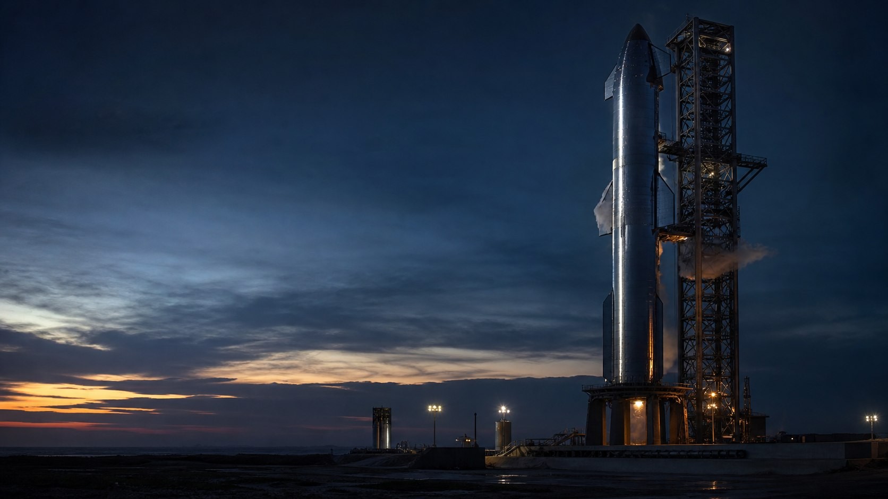
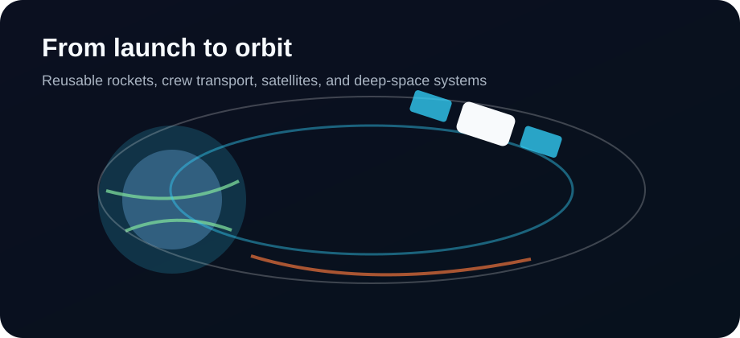
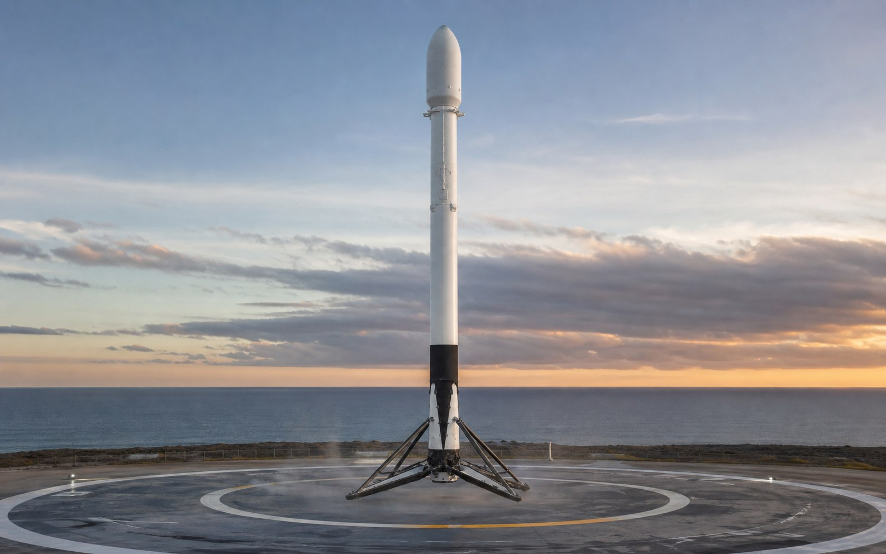
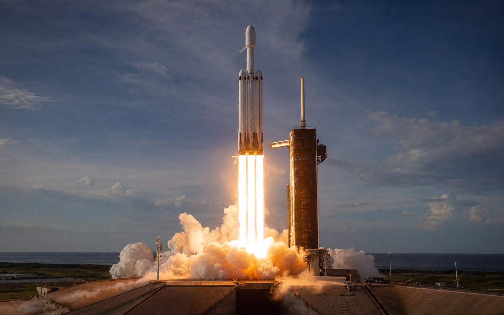
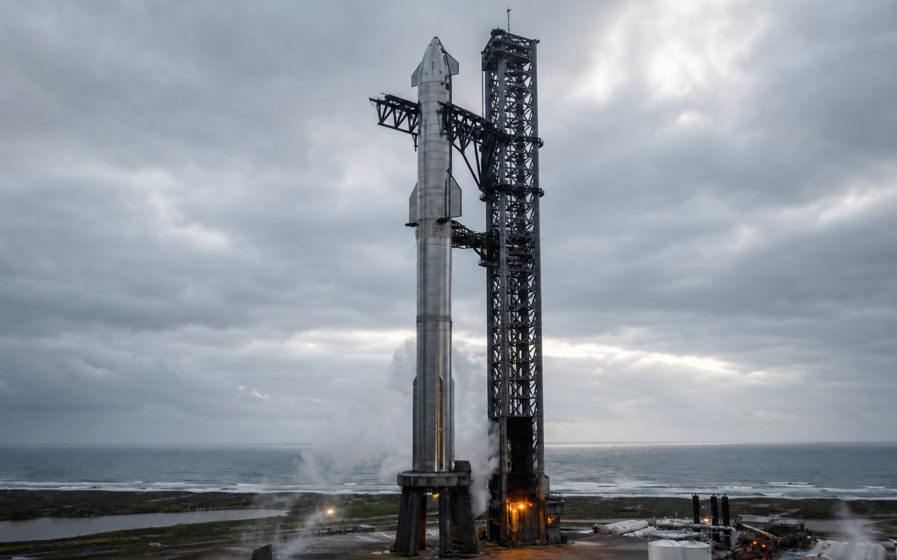
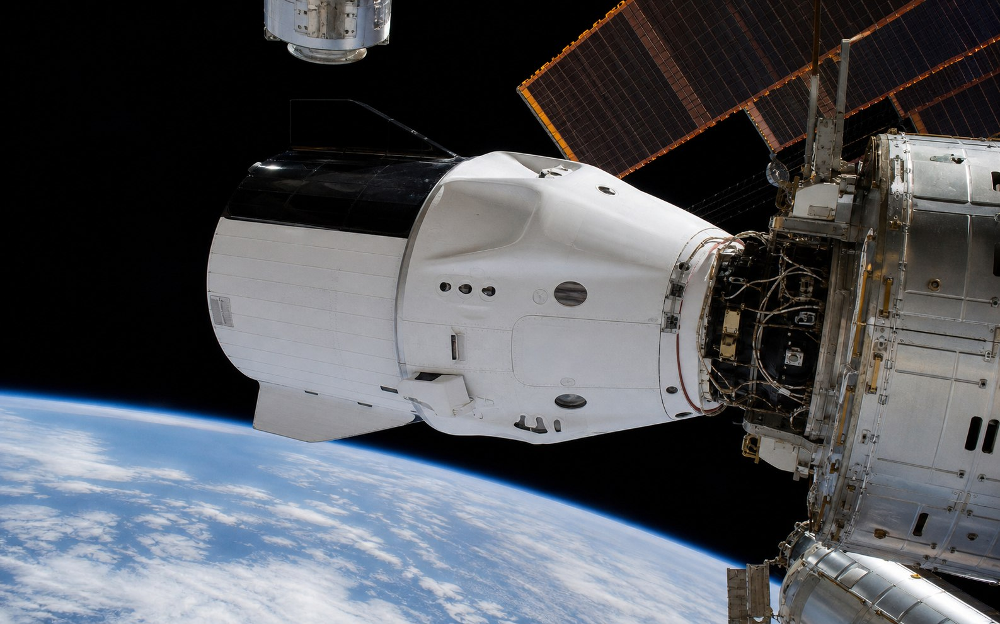

发射成本下降
火箭如果能回收复用，就像飞机不必每飞一次就报废。它改变的是整个行业的经济逻辑。

Why it matters
因为它解决的不是“把一枚火箭发上天”这么单一的问题，而是在重写太空产业的成本结构。成本一旦下降，卫星互联网、空间站运输、月球基地、深空探测才会从偶发项目变成持续发生的基础设施。
火箭如果能回收复用，就像飞机不必每飞一次就报废。它改变的是整个行业的经济逻辑。
更便宜、更高频的发射，让通信卫星、地球观测和科学载荷更容易进入轨道。
Starship 追求更大载荷和完全复用，是为了把月球、火星运输从愿景变成工程问题。
Key ideas
传统火箭大多是一次性消耗品。SpaceX 的思路是让一级火箭回到地面或海上平台，检查、翻新、再次飞行。
发动机、火箭、飞船、发射运营和卫星网络都尽量自己做，减少外部依赖，让迭代速度更快。
星链不只是卫星互联网业务，也为 SpaceX 带来稳定发射需求，反过来训练制造和发射体系。
它更像软件行业的迭代方式：尽快测试、暴露问题、改设计、再测试，把复杂系统推向可用。

How it works
Vehicles
不同航天器承担不同任务：Falcon 9 负责高频发射，Falcon Heavy 负责重型载荷，Dragon 负责乘员和货物往返空间站，Starship 则面向下一代大规模太空运输。

Reusable launch vehicle
主力两级运载火箭，是 SpaceX 高发射频率和火箭复用能力的基础。

Heavy-lift rocket
三芯并联的重型火箭，用于更重、更远、更高能量需求的任务。

Fully reusable system
面向月球、火星和大规模轨道运输的下一代系统，核心目标是完全复用。

Crew and cargo spacecraft
载人和货运飞船，让商业公司成为国际空间站运输体系的一部分。
Milestones
目标是降低太空运输成本，让太空不再只是国家级少数项目。
商业飞船进入国际空间站运输体系，太空交通开始出现新角色。
轨道级火箭一级成功回收，让“火箭复用”从概念进入现实。
商业公司执行载人入轨任务，近地轨道交通进入新阶段。
更大运力、更高复用率，目标指向月球、火星和轨道经济。
Big picture
SpaceX 的故事不是单纯的“火箭更强”，而是把制造、发射、回收、卫星服务和深空运输组织成一个不断复利的系统。普通用户看懂这一点，就能理解为什么它会持续影响通信、科学、国防、工业和未来的太空探索。